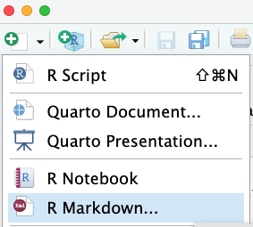
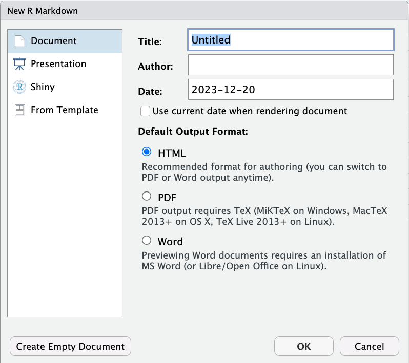
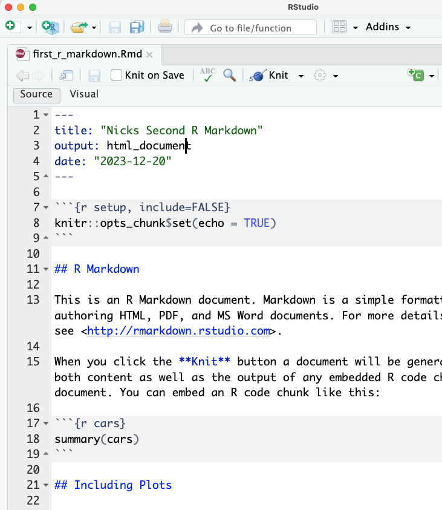
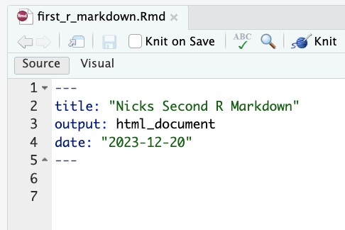
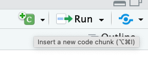
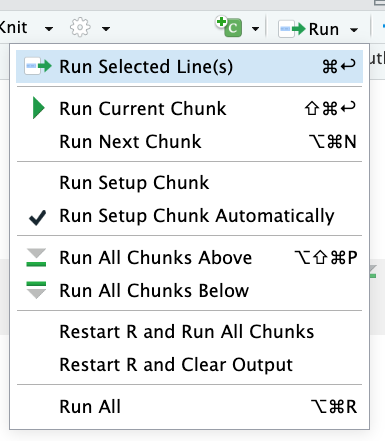
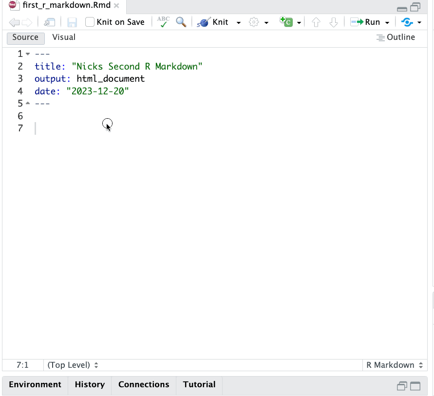

Working with R Markdown in RStudio¶
OK, enough watching me do things! It’s time for you to create your own R Markdown document!
Creating R Markdown¶
To create an R Markdown document in RStudio, simply click the dropdown arrow on the New Document icon and select R Markdown:

That will cause a dialogue box to pop up that will look something like this:

At first glance, this window can feel quite intimidating. But remember: an R Markdown file is just a plain text file organized in a certain way, and saved with the file suffix .Rmd. The choices you make here will impact how RStudio pre-populates your document, but there’s no magic here — you can change any of these options at any time by just changing the contents of your R Markdown document!
For now, leave the Default Output Options set to HTML, add yourself as the Author, give it a fun title, leave Document selected on the left, and click ok.
What You’ll See Next¶
The next thing you’ll see is… a lot. RStudio apparently believes the best way to introduce people to R Markdown is to give them an example document. I don’t hate that idea, but I really don’t like the way they populated it with a lot of fancy settings:

So… my advice is to start by deleting everything below the document metadata (the second set of three dashes). That should leave you something like this:

Now, by default, the body of an R Markdown document just contains text, so start by adding the text Hello World!. Then click on the Knit button. Because you picked HTML as the default output format, your document metadata has been pre-populated with output: html_document, meaning that by default when you click Knit your document will build into an HTML file. Note you may have to install some packages to make this work (like knitr), so just follow the prompts if they ask to install things.
Did that work for you?
Now click on the Open in Browser button in the window that pops up in RStudio, and follow the directions on in the last reading to print that page to PDF.
Congratulations! You’re well on your way to being proficient with R Markdown.
Adding in Code Chunks¶
There are a couple ways to add code chunks. The first is by hand — just type three backticks (`) followed by {r}, then in a following line another three backticks. Then add some R code between those lines, like:
x = 2
y = 3
x * y
Then click on the little green triangle in the top right of the code block to run that code.
OR if that felt clumsy, you can (a) click the green square with a plus sign and a C near the top right of your window, or (b) type the keyboard shortcut you see when you hover over that button (Command - Option - I on a mac) to have a new block added in your document:

Running Code Chunks¶
Hitting those green arrows any time you want to run a block of code is a little clunky, so instead let’s click on the dropdown arrow on the Run button near that “new code chunk” button in the top right:

As you can see, there are a number of options for running code chunks, many with associated keyboard shortcuts. Personally, I think Run All and Run Current Chunk are probably the most useful.
THE Biggest Gotcha About R Markdown¶
The idea of an R Markdown document is to have ALL the code needed to recreate an analysis embedded in the document where you discuss said analysis. But a common mistake students make is to (a) write and run a code chunk that creates a variable, (b) unintentionally delete or modify that code chunk, but (c) not notice because in the currently open R session, that variable has already been created, so other chunks that call the variable still work.
But then when the student shares their R Markdown file or runs it on a different day in a new R session, the document won’t work any more because the code that created that critical variable is gone and in a new R session that variable wasn’t already defined.

THIS PROBLEM IS NOT CORRECTED BY RESTARTING R — for whatever reason, R thinks that when R is restarted, it should also reload all variables (which drives me nuts). But it will prevent you from exporting your R Markdown to HTML or PDF.
How do you guard against this?¶
I strongly recommend starting all R Markdown files with rm(list=ls()) and making sure you can click Run All without getting errors. rm(list=ls()) will remove any variables that are already defined before your code starts so that only variables defined in the code in the notebook are accessible to R when it re-runs your notebook.
Code Chunk Options¶
One last R Markdown trick is that you can modify how R code chunks are rendered on export by passing arguments after r in the {r} header of a code cell.
For example, if you add , include=FALSE like this:
```{r, include=FALSE}
x = 4
```
the code in that code chunk will be run (x will be created and assigned the value 4), but neither the code nor its output will appear when you export your R Markdown document.
A few other options you may wish to use include:
echo=FALSE: don’t show the code being run, but do show the output.include=FALSE: don’t show the code being run or the output.echo=TRUE, eval=FALSEif you want a chunk of code to show up but not actually be run.message=FALSEwill suppress messages that get printed out (like when loading packages).